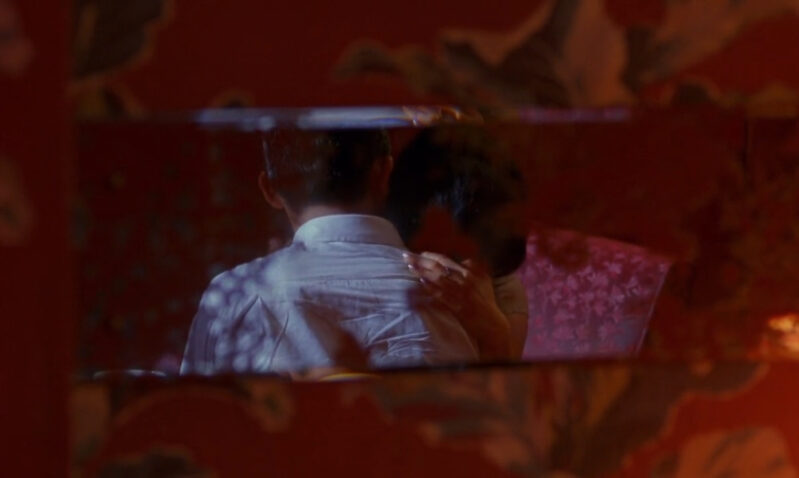
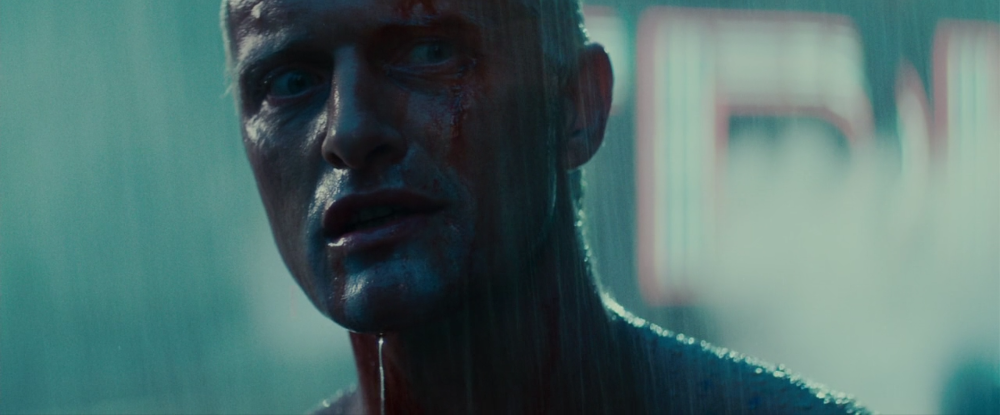
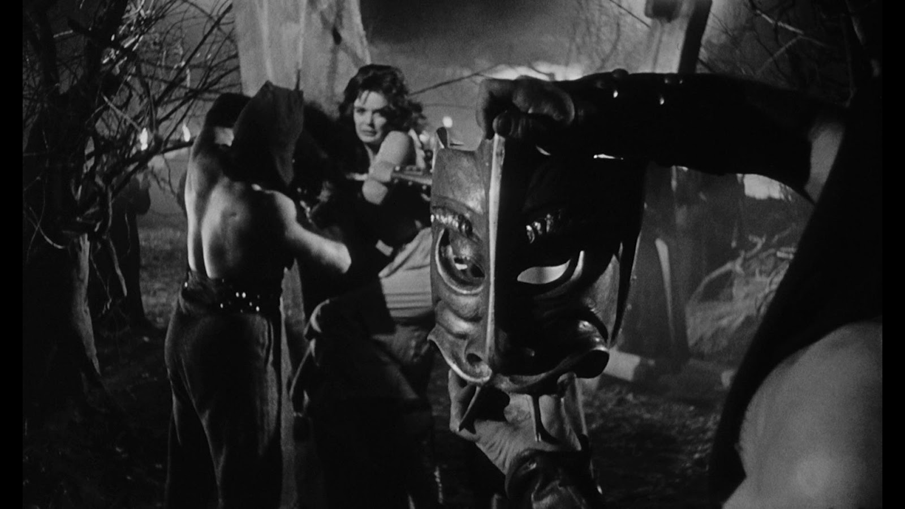

Matteo Bortoletto
My favorite movies in one frame
In The Mood For Love (Wong Kar Wai, 2000)

Blade Runner (Ridley Scott, 1982)

Investigation On A Citizen Above Suspicion (Elio Petri, 1970)
Black Sunday (Mario Bava, 1960)
